TextAnalysisR provides a supporting workflow tool for
text mining analysis. The web app incorporates quanteda (text
preprocessing), stm
(structural topic modeling), ggraph, and widyr (network analysis).
tidytext is implemented
to tidy non-tidy format objects. The R Shiny web app is available at
TextAnalysisR::TextAnalysisR.app() or https://textanalysisr.org. Functions are provided for
completing word-topic probabilities, document-topic probabilities,
estimated effects of covariates on topic prevalence, and network
analysis, similar to tasks available in the web app.
These steps are similar to those demonstrated in the Shiny
web app at TextAnalysisR::TextAnalysisR.app().
Install the TextAnalysisR Package
The development version can be installed from GitHub:
install.packages("devtools")
devtools::install_github("mshin77/TextAnalysisR")Alternatively, Launch and Browse the Shiny App
if (interactive()) {
TextAnalysisR.app()
}Process Files
Choose the Dataset
Upload an example dataset
mydata <- TextAnalysisR::process_files(dataset_choice = "Upload an Example Dataset")
head(mydata)## # A tibble: 6 × 6
## reference_type author year title keyword abstract
## <chr> <chr> <dbl> <chr> <chr> <chr>
## 1 journal_article Block, G. H. 1980 Dysc… Arithm… Notes t…
## 2 thesis Bukatman, K. L. 1981 The … locus … This st…
## 3 journal_article Watkins, M. W., & Webb, C. 1981 Comp… Comput… Results…
## 4 journal_article Chaffin, J. D. 1982 Arc-… Comput… The Arc…
## 5 journal_article Chaffin, J. D., Maxwell, B., & T… 1982 ARC-… Electr… This ar…
## 6 thesis Golden, C. K. 1982 The … NA The pur…Upload your file
file_info <- data.frame(filepath = "inst/extdata/SpecialEduTech.xlsx")
mydata <- TextAnalysisR::process_files(dataset_choice = "Upload Your File",
file_info = file_info)
head(mydata)## # A tibble: 6 × 6
## reference_type author year title keyword abstract
## <chr> <chr> <dbl> <chr> <chr> <chr>
## 1 journal_article Block, G. H. 1980 Dysc… Arithm… Notes t…
## 2 thesis Bukatman, K. L. 1981 The … locus … This st…
## 3 journal_article Watkins, M. W., & Webb, C. 1981 Comp… Comput… Results…
## 4 journal_article Chaffin, J. D. 1982 Arc-… Comput… The Arc…
## 5 journal_article Chaffin, J. D., Maxwell, B., & T… 1982 ARC-… Electr… This ar…
## 6 thesis Golden, C. K. 1982 The … NA The pur…Copy and paste text
text_input <- paste0("The purpose of this study was to conduct a content analysis of ",
"research on technology use.")
mydata <- TextAnalysisR::process_files(dataset_choice = "Copy and Paste Text",
text_input = text_input)
mydata## # A tibble: 1 × 1
## text
## <chr>
## 1 The purpose of this study was to conduct a content analysis of research on te…Preprocess Text Data
Unite Text Columns
df <- TextAnalysisR::SpecialEduTech
united_tbl <- TextAnalysisR::unite_text_cols(df, listed_vars = c("title", "keyword", "abstract"))
united_tbl## # A tibble: 490 × 7
## united_texts reference_type author year title keyword abstract
## <chr> <chr> <chr> <dbl> <chr> <chr> <chr>
## 1 Dyscalculia and the minic… journal_artic… Block… 1980 Dysc… Arithm… Notes t…
## 2 The effects of computer-a… thesis Bukat… 1981 The … locus … This st…
## 3 Computer Assisted Instruc… journal_artic… Watki… 1981 Comp… Comput… Results…
## 4 Arc-Ed Curriculum: Applic… journal_artic… Chaff… 1982 Arc-… Comput… The Arc…
## 5 ARC-ED curriculum: the ap… journal_artic… Chaff… 1982 ARC-… Electr… This ar…
## 6 The Effect of the Hand-he… thesis Golde… 1982 The … NA The pur…
## 7 A review of some traditio… journal_artic… Neal,… 1982 A re… tradit… Discuss…
## 8 A study of the effectiven… thesis Engle… 1983 A st… microc… The pur…
## 9 The influence of computer… thesis Foste… 1983 The … comput… The eff…
## 10 Using Computer Software t… journal_artic… Pomme… 1983 Usin… Comput… The art…
## # ℹ 480 more rowsSegment a Corpus Into Tokens
tokens <- TextAnalysisR::preprocess_texts(united_tbl,
text_field = "united_texts",
min_char = 2,
remove_punct = TRUE,
remove_symbols = TRUE,
remove_numbers = TRUE,
remove_url = TRUE,
remove_separators = TRUE,
split_hyphens = TRUE,
split_tags = TRUE,
include_docvars = TRUE,
keep_acronyms = FALSE,
padding = FALSE,
verbose = FALSE)Detect Multi-Word Expressions
collocations <- TextAnalysisR::detect_multi_word_expressions(tokens, size = 2:5,
min_count = 2)
head(collocations)## [1] "students with" "learning disabilities" "this study"
## [4] "problem solving" "with disabilities" "assisted instruction"Process Tokens With Compound Words
library(quanteda)
custom_dict <- quanteda::dictionary(list(custom = c("learning disabilities", "problem solving", "assisted instruction")))
toks_compound <- quanteda::tokens_compound(
tokens,
pattern = custom_dict,
concatenator = "_",
valuetype = "glob",
window = 0,
case_insensitive = TRUE,
join = TRUE,
keep_unigrams = FALSE,
verbose = TRUE
)Plot Word Frequency
dfm_object_init <- quanteda::dfm(toks_compound)
TextAnalysisR::plot_word_frequency(dfm_object_init, n = 20)
Remove Predefined Stopwords
stopwords <- stopwords::stopwords("en", source = "snowball")
toks_removed <- quanteda::tokens_remove(toks_compound, pattern = stopwords, verbose = FALSE)
dfm_init <- quanteda::dfm(toks_removed)
TextAnalysisR::plot_word_frequency(dfm_init, n = 20)
Remove Common Words in the Dataset
common_words <- c("study", "based", "learning", "students", "research", "results")
toks_removed_common <- quanteda::tokens_remove(toks_removed, pattern = common_words, verbose = FALSE)
dfm_init_updated <- quanteda::dfm(toks_removed_common)
TextAnalysisR::plot_word_frequency(dfm_init_updated, n = 20)
Lemmatize Tokens
library(spacyr)
texts <- sapply(toks_removed_common, paste, collapse = " ")
parsed <- spacyr::spacy_parse(x = texts, lemma = TRUE, entity = FALSE, pos = FALSE)
toks_lemmatized <- quanteda::as.tokens(parsed, use_lemma = TRUE)
dfm_object <- quanteda::dfm(toks_lemmatized)
quanteda::docvars(dfm_object) <- quanteda::docvars(dfm_init_updated)
TextAnalysisR::plot_word_frequency(dfm_object, n = 20)
Word Analysis
Analyze and Visualize Word Co-occurrence Networks
Word co-occurrence network plot
word_co_occurrence_network_results <-
TextAnalysisR::word_co_occurrence_network(
dfm_object,
doc_var = "reference_type",
co_occur_n = 100,
top_node_n = 30,
nrows = 1,
height = 1200,
width = 800)## [1] "doc_var has 2 levels: journal_article, thesis"
## [1] "Processing group level: journal_article"
## [1] "Processing group level: thesis"## [1] "Generating table for level: journal_article"
## [1] "Generating table for level: thesis"## [1] "Generating summary for level: journal_article"
## [1] "Generating summary for level: thesis"
word_co_occurrence_network_results$plotAnalyze and Visualize Word Correlation Networks
Word correlation network plot
word_correlation_network_results <-
TextAnalysisR::word_correlation_network(
dfm_object,
doc_var = "reference_type",
common_term_n = 30,
corr_n = 0.42,
top_node_n = 40,
nrows = 2,
height = 1400,
width = 800)## [1] "doc_var has 2 levels: journal_article, thesis"
## [1] "Processing group level: journal_article"
## [1] "Processing group level: thesis"
## [1] "Generating table for level: journal_article"
## [1] "Generating table for level: thesis"
## [1] "Generating summary for level: journal_article"
## [1] "Generating summary for level: thesis"
word_correlation_network_results$plotAnalyze and Visualize Word Frequency Distributions Across a Continuous Variable
Word frequency distribution plot
word_frequency_distribution_results <- TextAnalysisR::word_frequency_distribution(
dfm_object,
continuous_variable = "year",
selected_terms = c("calculator", "computer"),
height = 500,
width = 800)
word_frequency_distribution_results$plotStructural Topic Modeling
Evaluate Optimal Number of Topics
TextAnalysisR::evaluate_optimal_topic_number(
dfm_object = dfm_object,
topic_range = 5:30,
max.em.its = 75,
categorical_var = "reference_type",
continuous_var = "year",
height = 600,
width = 800,
verbose = FALSE)Select Top Terms for Each Topic
out <- quanteda::convert(dfm_object, to = "stm")
library(stm)
stm_15 <- stm(
data = out$meta,
documents = out$documents,
vocab = out$vocab,
max.em.its = 75,
init.type = "Spectral",
K = 15,
prevalence = ~ reference_type + s(year),
verbose = FALSE)
top_topic_terms <- TextAnalysisR::select_top_topic_terms(
stm_model = stm_15,
top_term_n = 10,
verbose = FALSE
)
library(dplyr)
top_topic_terms %>%
mutate_if(is.numeric, ~ round(., 3)) %>%
DT::datatable(
rownames = FALSE,
extensions = 'Buttons',
options = list(
scrollX = TRUE,
scrollY = "400px",
width = "80%",
dom = 'Bfrtip',
buttons = c('copy', 'csv', 'excel', 'pdf', 'print')
)
) %>%
DT::formatStyle(
columns = c("topic", "term", "beta"),
fontSize = '16px'
)Generate Topic Labels Using OpenAI’s API
Directly input the Open AI API key
top_labeled_topic_terms <- TextAnalysisR::generate_topic_labels(
top_topic_terms,
model = "gpt-3.5-turbo",
temperature = 0.5,
openai_api_key = "your_openai_api_key",
verbose = FALSE)
top_labeled_topic_terms Load the Open AI API key from the .env file in the working directory
top_labeled_topic_terms <- TextAnalysisR::generate_topic_labels(
top_topic_terms,
model = "gpt-3.5-turbo",
temperature = 0.5,
verbose = FALSE)
top_labeled_topic_terms %>%
mutate_if(is.numeric, ~ round(., 3)) %>%
DT::datatable(
rownames = FALSE,
extensions = 'Buttons',
options = list(
scrollX = TRUE,
scrollY = "400px",
width = "80%",
dom = 'Bfrtip',
buttons = c('copy', 'csv', 'excel', 'pdf', 'print')
)
) %>%
DT::formatStyle(
columns = c("topic", "topic_label", "term", "beta"),
fontSize = '16px'
)Plot Highest Word Probabilities for Each Topic
Add generated topic lables to the top topic terms
word_probability_plot <- TextAnalysisR::word_probability_plot(
top_labeled_topic_terms,
topic_label = "topic_label",
ncol = 1,
height = 3500,
width = 800)
word_probability_plotUse non-labeled topics
word_probability_plot <- TextAnalysisR::word_probability_plot(
top_topic_terms,
ncol = 2,
height = 2000,
width = 800)
word_probability_plotManually label topics
manual_labels <- c("1" = "CAI for math problem solving",
"2" = "STEM technology",
"3" = "Use of manipulatives")
word_probability_plot <- TextAnalysisR::word_probability_plot(
top_topic_terms,
topic_label = manual_labels,
ncol = 2,
height = 2000,
width = 850)
word_probability_plotPer-Document Per-Topic Probabilities
Plot mean topic prevalence across documents
topic_probability_plot <- TextAnalysisR::topic_probability_plot(
stm_model= stm_15,
top_n = 10,
height = 500,
width = 800,
verbose = TRUE)
topic_probability_plotcreate a table of mean topic prevalence across documents
topic_probability_table <- TextAnalysisR::topic_probability_table(
stm_model= stm_15,
top_n = 10,
verbose = TRUE)
topic_probability_table